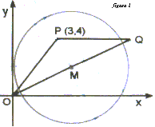
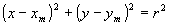
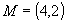
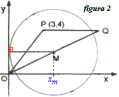
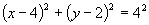
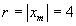
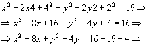
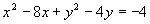

A forma canônica da equação de uma circunferência com centro no ponto M é:

Pelo item 02:

Substituindo as coordenadas do ponto M na equação da circunferência:


No ponto de tangência, o raio da circunferência é perpendicular ao eixo Y (figura 2), consequentemente este raio é paralelo ao eixo X, portanto:

Temos então que a equação canônica da circunferência, como centro no ponto M é:
Desenvolvendo a equação acima e reduzindo aos termos semelhantes:

 |
Conclusão: O item 16 é verdadeiro.
 Voltar
Voltar